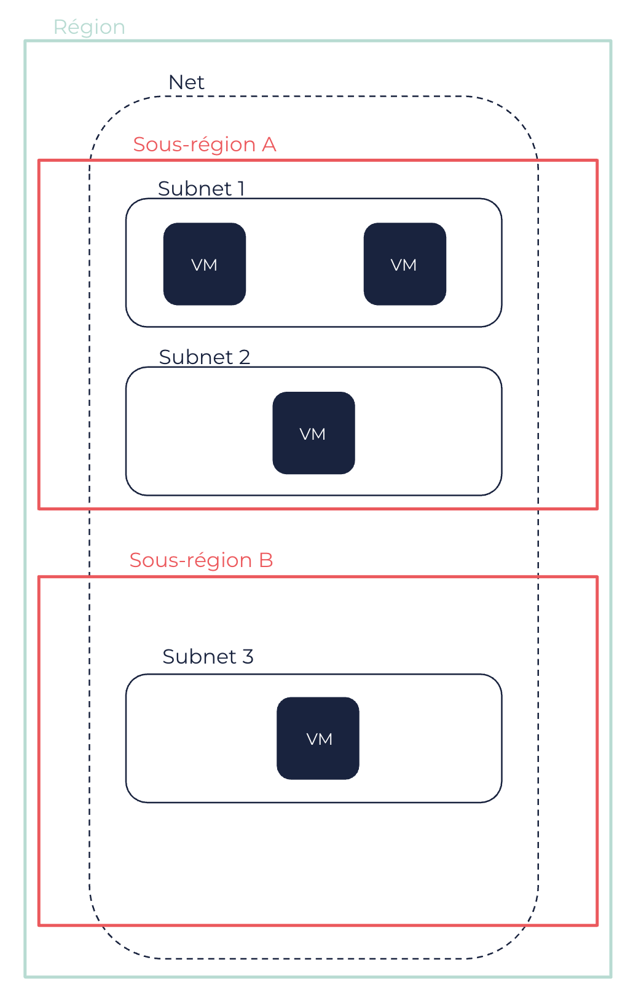

À propos des Nets
Les Nets (réseaux) sont des réseaux virtuels dédiés à votre compte au sein d’une Région, dans lesquels vous pouvez lancer des ressources Cloud. Ces ressources doivent être lancées dans des Subnets et peuvent être connectées à Internet ou non.
Vous utilisez des route tables pour router le trafic de chaque Subnet, et des security groups pour protéger vos ressources. Les Nets vous permettent également de créer une peering connection avec un autre Net, d’utiliser plusieurs network interfaces pour vos machines virtuelles (VM) et de créer des connexions DirectLink ou VPN.
Net et Subnets
Un Net est un réseau virtuel que vous définissez, qui est isolé au sein du Cloud OUTSCALE et qui est dédié à votre compte. Vous pouvez créer des VM et des ressources dans votre Net. Les Nets sont créés pour une Région.
Lorsque vous créez un Net, vous spécifiez la plage d’IP en notation CIDR, qui peuvent ensuite être utilisées pour vos ressources lancées dans ce Net. Le bloc CIDR doit être inclus dans les plages RFC 1918, qui sont constituées des trois blocs suivants :
-
10.0.0.0 - 10.255.255.255 (préfixe 10/8)
-
172.16.0.0 - 172.31.255.255 (préfixe 172.16/12)
-
192.168.0.0 - 192.168.255.255 (préfixe 192.168/16)
Pour en savoir plus, voir la documentation RFC 1918.
|
Vous ne pouvez pas modifier le bloc CIDR d’un Net une fois celui-ci créé. Si votre Net devient trop petit pour vos ressources, vous pouvez en créer un plus grand et migrer vos VM dans celui-ci à l’aide d’OUTSCALE machine images. Pour en savoir plus, voir OUTSCALE Machine Images (OMI). |
Après avoir créé un Net, vous devez créer un ou plusieurs Subnets dans celui-ci, les ressources devant être lancées dans des Subnets. Les Subnets correspondent à des sous-réseaux au sein de votre Net, auxquels vous attribuez une plage d’IP en notation CIDR. Le bloc CIDR de chaque Subnet doit faire partie du bloc CIDR du Net, et les blocs CIDR des Subnets ne doivent pas se chevaucher. Les Subnets sont créés dans une Sous-région, et vous pouvez créer un ou plusieurs Subnets dans chaque Sous-région de la Région du Net.
|
Dans chaque Subnet d’un Net, 3DS OUTSCALE réserve les quatre premières IP ainsi que la dernière du bloc CIDR. Vous ne pouvez pas attribuer ces IP à des ressources. Par exemple, dans un Subnet avec le bloc CIDR 10.0.0.0/24, les IP suivantes sont réservées :
|

Un Net ou un Subnet peut être dans un des états suivants :
-
pending: Le processus de création est en cours. -
available: Le Net ou le Subnet est créé et vous pouvez y lancer des ressources. -
deleting: Le Net ou le Subnet est en cours de suppression.
Lorsque vous utilisez un Net, vous pouvez spécifier l’option d’allocation pour l’ensemble du Net lors sa création. Si vous paramétrez l’option d’allocation du Net sur default, vous devez paramétrer l’attribut tenancy de chaque VM que vous souhaitez placer sur un serveur dédié sur dedicated. Si vous paramétrez l’option d’allocation du Net sur dedicated, l’attribut tenancy de toutes les VMs créées dans ce Net est automatiquement paramétré sur dedicated. Vous ne pouvez pas modifier l’option d’allocation une fois votre Net créé.
Pour en savoir plus à propos de l’allocation des VM, voir À propos des VM.
Routage et sécurité d’un Subnet
Chaque Subnet doit être associé à une route table afin de spécifier les routes autorisées pour le trafic sortant qui quitte le Subnet. Une route table, appelée route table principale, est créée par défaut pour votre Net, et chaque Subnet lui est automatiquement associée à sa création. Vous pouvez également créer vos propres route tables et les associer à vos Subnets. Les routes contenues dans la route table principale peuvent être modifiées. Vous pouvez également créer vos propres route tables et les associer à vos Subnets, ou les spécifier comme la route table principale. Il est recommandé d’utiliser une route table par Subnet. Pour en savoir plus à propos des route tables, voir À propos des route tables.
Les security groups vous permettent de contrôler l’accès à vos VM dans votre Net. Les security groups agissent comme un ensemble de règles de pare-feu qui, dans un Net, contrôlent les flux entrants et sortants. Lorsque vous créez des VM dans un Net, vous devez les associer à un ou plusieurs security groups. Si vous ne spécifiez aucun security group, la VM est automatiquement associée avec le security group par défaut qui est créé automatiquement avec votre Net. Vous pouvez ensuite modifier les règles du security group que vous avez créé ou du security group par défaut selon votre architecture et les contrôles que vous souhaitez configurer. Pour en savoir plus sur les security groups et les règles de security groups, voir Security Groups.
|
Dans un Net, vous pouvez autoriser l’accès vers et depuis :
|
|
Par défaut, les VMs dans un même Subnet peuvent communiquer entre elles sans aucune règle de security group nécessaire, grâce au contournement de pare-feu. Contourner un pare-feu consiste à désactiver des security groups afin de réduire la latence générale entre des VM. Cela permet aussi d’éviter des conflits avec des protocoles spécifiques, tels que ceux utilisés par Microsoft Windows. Pour en savoir plus, voir Référence des tags user data > Contournement de pare-feu. Si vous voulez une sécurité accrue entre vos VM, (par exemple, une sur un DLZ et l’autre sur un réseau interne), vous pouvez les placer dans des Subnets différents ou désactiver cette fonctionnalité. Vous pouvez désactiver cette fonctionnalité en ajoutant, avant de créer des Subnets, le tag Ce comportement ne peut être modifié par un tag une fois que vous avez créé un Subnet dans le Net. |
De la même manière qu’il est recommandé d’utiliser une route table par Subnet, il est également recommandé d’utiliser un security group par Subnet. Ceci correspond à créer un Subnet pour une application, avec sa route table et son security group appropriés.
Vous pouvez également utiliser Elastic Identity Management (EIM) pour contrôler qui peut accéder, créer et gérer des ressources dans votre Net. Pour en savoir plus, voir Elastic Identity Management (EIM).
IP et accès à Internet
Chaque VM créée dans un Net a une IP privée principale attribuée, qui n’est pas accessible depuis Internet et qui peut être utilisée pour la communication entre les VM du Net. Contrairement au Cloud public, vous pouvez choisir l’IP privée associée aux VM créées dans le Subnet d’un Net. Si vous ne spécifiez aucune IP privée lors de la création de la VM, celle-ci est automatiquement choisie dans la plage d’IP du Subnet.
|
Les requêtes API RunInstances vous permettent de choisir les IP privées de plusieurs VM que vous créez en même temps à l’aide du paramètre |
Vous pouvez ajouter des IP privées additionnelles, appelées IP secondaires, à une VM dans un Net à l’aide des network interface cards (NIC). Pour en savoir plus, voir Network interface cards (NIC).
Par défaut, les VM créées dans un Net n’ont pas d’IP publiques attribuées, et peuvent uniquement avoir accès entre elles. Pour connecter des VM dans un Net à Internet, vous devez utiliser des IP publiques, qui sont des IP publiques statiques que vous pouvez associer à une VM, une interface réseau ou un NAT service. Pour en savoir plus, voir IP publiques.
Vous pouvez connecter des VM d’un Net à Internet de manière directe ou indirecte :
-
Pour directement connecter des VM d’un Net à Internet, vous devez leur associer une IP publique et utiliser un internet service pour envoyer le trafic vers et depuis Internet. Pour en savoir plus, voir Utiliser les internet services pour des connexions directes.
-
Pour indirectement connecter des VM d’un Net à Internet, vous devez utiliser un NAT service qui porte l’IP publique et qui envoie le trafic vers et depuis Internet au nom des VM. Pour en savoir plus, voir Utiliser les NAT services pour des connexions indirectes.
Dans les deux cas, vous devez router le trafic 0.0.0.0/0 du Subnet dans lequel se trouvent les VM vers l’internet service ou le NAT service. Vous devez également ajouter les règles appropriées aux security groups de vos Subnets. Permettre l’accès indirect à Internet permet à vos VM, par exemple, de rechercher les mises à jour disponibles.
|
Pour accéder à des serveurs NTP, les VM doivent être connectées à Internet. Ainsi, pour permettre à vos VM dans un Net d’accéder à des serveurs NTP, vous devez ajouter une des routes suivantes à la route table associée à leur Subnet :
Vous pouvez utiliser l’IP d’un des serveurs NTP OUTSCALE. Pour en savoir plus, voir IP publiques OUTSCALE. |
Net et les autres services
Les Nets peuvent être connectés à d’autres réseaux à l’aide des services 3DS OUTSCALE suivants, qui requièrent également une virtual gateway (VGW) et, pour les connexions VPN, une client gateway (CGW) :
-
DirectLink : Vous pouvez mettre en place une connexion physique entre votre réseau Internet et un site DirectLink où se trouve votre Net pour accéder directement à vos ressources. Pour en savoir plus, voir DirectLink.
-
Net Peering : Vous pouvez appairer deux Nets pour autoriser les ressources dans chacun d’eux à communiquer entre elles. Pour en savoir plus, voir Travailler avec les Net peerings.
Page connexe